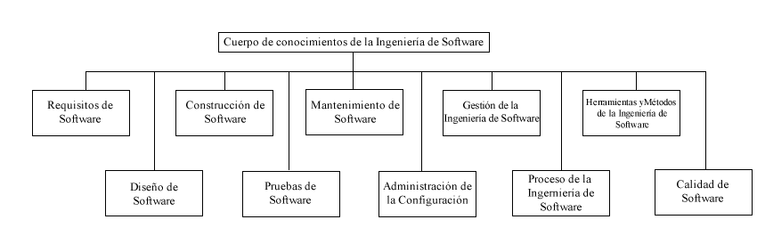

La Gestión de la Ingeniería del Software definirse como la aplicación para actividades de gestión – planificación, coordinación, mediciones, monitoreo, control e informes – que asegure un desarrollo y mantenimiento del software sistemático, disciplinado y cuantificado (IEEE610.12-90). Gestión de la Ingeniería del Software, por tanto, se encarga de la gestión y medición de la ingeniería del software. A pesar de que medir es un aspecto importante en todas las KAs, no es hasta aquí que se presenta el tema de programas de medición. Aunque por una parte sea verdad afirmar que, en cierto sentido, debiera ser posible gestionar la ingeniería del software de la misma manera que cualquier otro proceso (complejo) existen aspectos específicos de los productos software y de los procesos del ciclo de vida del software que complican una gestión efectiva –sólo algunos de los cuales se apuntan a continuación:
♦ La percepción de los clientes es tal que con frecuencia existe una falta de aprecio de la complejidad inherente a la ingeniería del software, particularmente en relación al impacto que produce cambiar los requisitos.
♦ Es casi inevitable que los propios procesos de ingeniería del software generen la necesidad de nuevos o modificados requisitos del cliente.
♦ Como resultado, el software se construye con frecuencia mediante un proceso iterativo en vez de mediante una secuencia de tareas cerradas.
♦La ingeniería del software incorpora necesariamente aspectos de creatividad y de disciplina – mantener un balance apropiado entre los dos es con frecuencia difícil.
♦El grado de novedad y de complejidad del software son con frecuencia extremadamente altos.
♦ La tasa de cambio de la tecnología subyacente es muy rápida.
| Fases | Descripcion | Artefactos |
|---|---|---|
| Planificacion |
La planificación es la primera fase en la gestión de un proyecto, y es previa al desarrollo de este. En esta fase has de definir cuáles serán las actividades que se tendrán que hacer, estimar la duración del proyecto. También has de indicar cuáles serán los recursos necesarios para poder llevar a cabo con éxito el proyecto. |
|
| Programacion | Esta es la segunda fase de la gestión de proyectos, y consiste en crear el calendario de ejecución del proyecto, indicando en qué fechas se hará cada parte del proyecto, incluyendo la de inicio y la de fin. Esta fase junto la de planificación, son previas al inicio del proyecto. |
|
| Seguimiento y control | Esta fase es la única fase de toda la gestión que se hace durante el proyecto. Consiste en seguir y controlar su ejecución. Es decir, obtener datos de la evolución y tomar las medidas correctas en caso de que hubiese algún inconveniente. La flexibilidad y la capacidad de reacción son fundamentales para una buena gestión de proyecto. No seamos ingenuos, por mucho que planifiquemos un proyecto siempre habrá que introducir cambios para resolver una incidencia, facilitar el trabajo de los hombres y mujeres involucrados, etc. La capacidad de adaptación y de gestión del cambio son dos factores importantes si queremos tener éxito. |
|
| Analisis y evolucion | sta es la cuarta y última fase de la gestión de proyectos, la cual sucede ya después de haber terminado el proyecto. En esta lo que se hace es medir las diferencias entre lo que se había previsto durante la fase de planificación, y lo que realmente ha sucedido, normalmente se suele medir sobretodo el presupuesto planeado y el coste real. Esta fase es importante también porque permite observar los errores que se han cometido durante todo el proceso, y aprender de la experiencia para los proyectos futuros. |
|
Autor : Julio cesar Pineda Perez
Correo : julio.pineda@cecar.edu.co
Telefono de Contacto: 3014361549
©2018